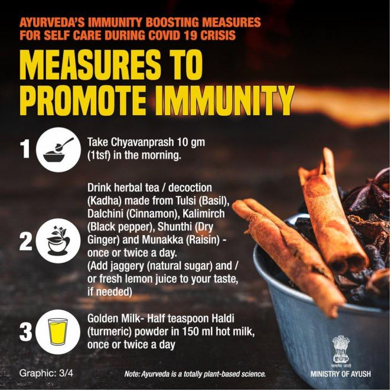

Unless your area is under a stay-at-home order or you need to remain in quarantine, try to exercise outside as much as possible. Take a walk, jog, or ride a bike outside, just remember to wear a mask and/or maintain a safe distance from others. The fresh air and sunshine will provide a further boost to your mental health.
Watch your favorite streaming show or listen to a podcast or some great music while working out. While walking, explore a new area in your neighborhood or catch up with a friend on the phone to keep things from getting stale.
Immerse yourself in the full experience of walking outdoors by adding a mindfulness element. Notice the smell of the air, the variety of flowers and trees and the feel of the sun or the wind as you move. Bringing your attention to these things can give your conscious mind a break from your worries
Always wanted to try barre exercise, line dancing, cardio funk, or HIIT (high-intensity interval training)? Find a free video online, subscribe to one of the many online classes available, or download an app to guide you from the safety of your own home . Many people find they are more comfortable trying something new when no one else is watching.